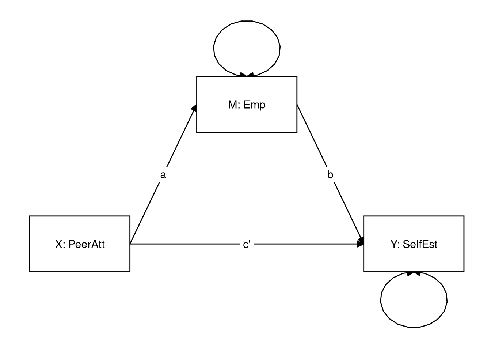
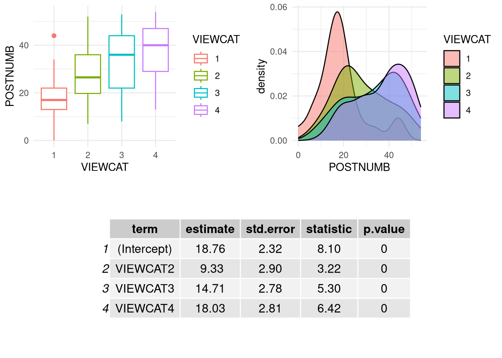
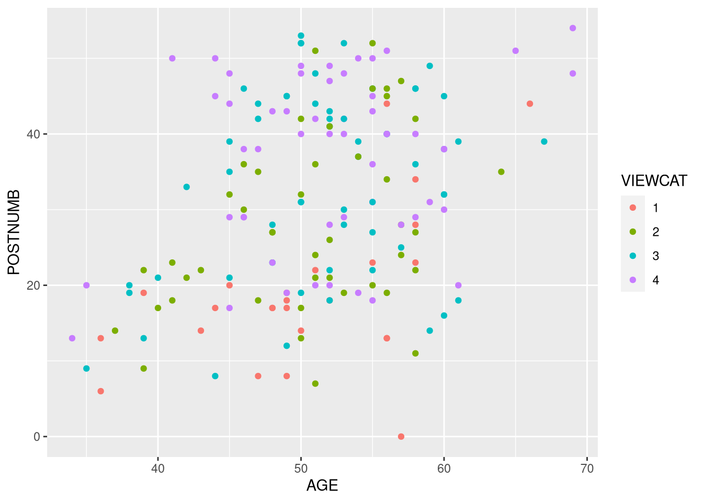
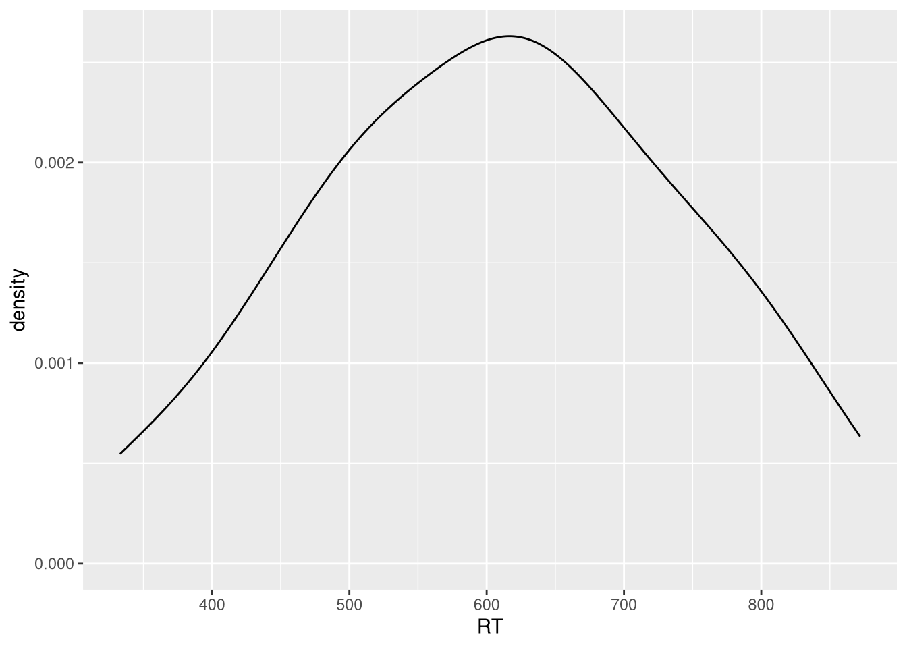
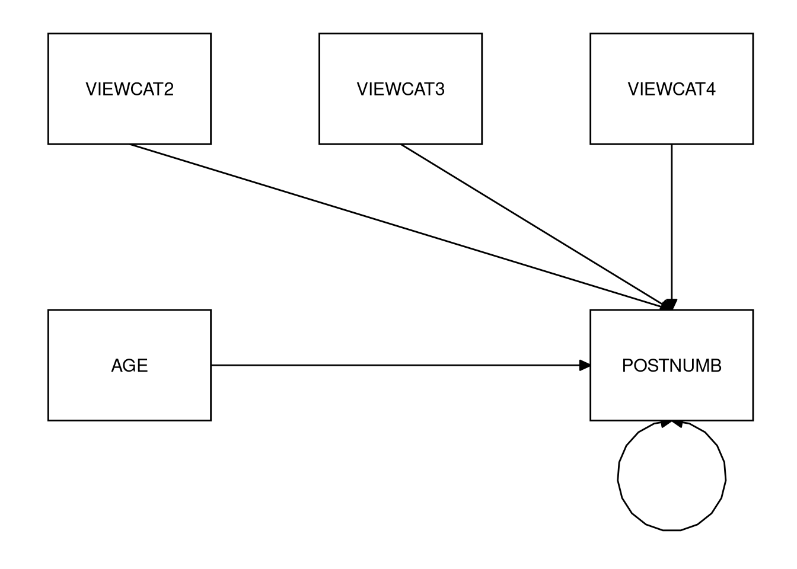
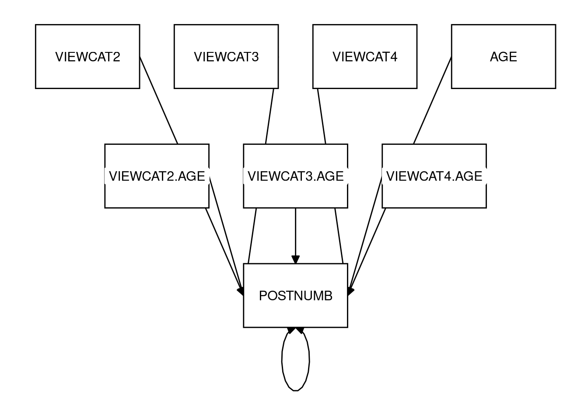

3.3 At-Home Exercises
3.3.1 Mediation
In the first part of this practical, we will analyze the data contained in SelfEsteem.sav. These data comprise 143 observations of the following variables.1
- case: Participant ID number
- ParAtt: Parental Attachment
- PeerAtt: Peer Attachment
- Emp: Empathy
- ProSoc: Prosocial behavior
- Aggr: Aggression
- SelfEst: Self-esteem
3.3.1.1
Load the SelfEsteem.sav data.
Note: Unless otherwise specified, all analyses in Section 3.3.1 apply to these data.
Click to show code
library(haven)
seData <- read_sav("SelfEsteem.sav")Suppose we are interested in the (indirect) effect of peer attachment on self-esteem, and whether empathy has a mediating effect on this relationship.
We might generate the following hypotheses:
- Better peer relationships promote higher self esteem
- This effect is mediated by a student’s empathy levels, where better peer relationships increase empathy, and higher levels of empathy lead to higher self-esteem.
To evaluate these hypotheses, we will use lavaan to estimate a path model.
3.3.1.2
Draw a path model (on paper) that can be used to test the above hypotheses.
- Label the input (X), outcome (Y), and mediator/intermediary (M).
- Label the paths a, b, and c’.
Hint: Refer back to the Mediation Basics lecture if you need help here.
Click for explanation
3.3.1.3
Specify the lavaan model syntax implied by the path diagram shown above.
- Save the resulting character string as an object in your environment.
Hint: Refer back to the example in which opinions of systematic racism mediate the relationship between political affiliation and support for affirmative action policies from the Mediation Testing lecture this week.
Click to show code
mod <- '
## Equation for outcome:
SelfEst ~ Emp + PeerAtt
## Equation for the mediator:
Emp ~ PeerAtt
'3.3.1.4
Use the lavaan::sem() function to estimate the model defined in 3.3.1.3.
- Use the default settings in
sem().
Click to show code
library(lavaan)
out <- sem(mod, data = seData)3.3.1.5
Explore the summary of the fitted model.
- Which numbers correspond to the a, b, and c’ paths?
- Interpret these paths.
- Do the direction of the effects seem to align with our hypothesis?
Click to show code
summary(out)## lavaan 0.6.16 ended normally after 1 iteration
##
## Estimator ML
## Optimization method NLMINB
## Number of model parameters 5
##
## Number of observations 143
##
## Model Test User Model:
##
## Test statistic 0.000
## Degrees of freedom 0
##
## Parameter Estimates:
##
## Standard errors Standard
## Information Expected
## Information saturated (h1) model Structured
##
## Regressions:
## Estimate Std.Err z-value P(>|z|)
## SelfEst ~
## Emp 0.234 0.091 2.568 0.010
## PeerAtt 0.174 0.088 1.968 0.049
## Emp ~
## PeerAtt 0.349 0.076 4.628 0.000
##
## Variances:
## Estimate Std.Err z-value P(>|z|)
## .SelfEst 0.934 0.110 8.456 0.000
## .Emp 0.785 0.093 8.456 0.000Click for explanation
The results show estimates of the a path (Emp ~ PeerAtt), the b path
(SelfEst ~ Emp), and the c’ path (SelfEst ~ PeerAtt).
All three of these effects are positive and significant, including the direct
effect of PeerAtt on SelfEst
(\(\beta = 0.174\),
\(Z = 1.97\),
\(p = 0.025\)),
and the parts of the indirect effect made up by the effect of PeerAtt on
Emp
(\(\beta = 0.349\),
\(Z = 4.63\),
\(p = 0\)),
and Emp on SelfEst
(\(\beta = 0.234\),
\(Z = 2.57\),
\(p = 0.005\)).
We can see that the direction of the effects seems to support of our hypotheses, but without taking the next steps to investigate the indirect effect, we should be hesitant to say more.
Remember that an indirect effect (IE) is the product of multiple regression slopes. Therefore, to estimate an IE, we must define this product in our model syntax. In lavaan, we define the new IE parameter in two steps.
- Label the relevant regression paths.
- Use the labels to define a new parameter that represent the desired IE.
We can define new parameters in lavaan model syntax via the := operator. The
lavaan website contains a tutorial on this procedure: http://lavaan.ugent.be/tutorial/mediation.html
3.3.1.6
Use the procedure described above to modify the model syntax from 3.3.1.3
by adding the definition of the hypothesized IE from PeerAtt to SelfEst.
Click to show code
mod <- '
## Equation for outcome:
SelfEst ~ b * Emp + PeerAtt
## Equation for mediator:
Emp ~ a * PeerAtt
## Indirect effect:
ie := a * b
'Click for explanation
Notice that I only label the parameters that I will use to define the IE. You are free to label any parameter that you like, but I choose the to label only the minimally sufficient set to avoid cluttering the code/output.
3.3.1.7
Use lavaan::sem() to estimate the model with the IEs defined.
- Use the default settings for
sem(). - Is the hypothesized IE significant according to the default tests?
Hint: Refer to the Mediation Testing lecture
Click to show code
out <- sem(mod, data = seData)
summary(out)## lavaan 0.6.16 ended normally after 1 iteration
##
## Estimator ML
## Optimization method NLMINB
## Number of model parameters 5
##
## Number of observations 143
##
## Model Test User Model:
##
## Test statistic 0.000
## Degrees of freedom 0
##
## Parameter Estimates:
##
## Standard errors Standard
## Information Expected
## Information saturated (h1) model Structured
##
## Regressions:
## Estimate Std.Err z-value P(>|z|)
## SelfEst ~
## Emp (b) 0.234 0.091 2.568 0.010
## PeerAtt 0.174 0.088 1.968 0.049
## Emp ~
## PeerAtt (a) 0.349 0.076 4.628 0.000
##
## Variances:
## Estimate Std.Err z-value P(>|z|)
## .SelfEst 0.934 0.110 8.456 0.000
## .Emp 0.785 0.093 8.456 0.000
##
## Defined Parameters:
## Estimate Std.Err z-value P(>|z|)
## ie 0.082 0.036 2.245 0.025Click for explanation
The IE of Peer Attachment on Self Esteem through Empathy is statistically significant (\(\hat{\textit{IE}} = 0.082\), \(Z = 2.25\), \(p = 0.012\)).
Note: The p-value above doesn’t match the output because we’re testing a directional hypothesis, but lavaan conducts two-tailed tests for the model parameters.
As we learned in the lecture, the above test of the indirect effect is equivalent to Sobel’s Z test (which we don’t really want). An appropriate, robust test of the indirect effect requires bootstrapping, which we will do later this week as part of the in-class exercises.
For now, we’ll add another input variable to our model: parental attachment.
We will use this model to evaluate the following research questions:
- Is there a direct effect of parental attachment on self-esteem, after controlling for peer attachment and empathy?
- Is there a direct effect of peer attachment on self-esteem, after controlling for parental attachment and empathy?
- Is the effect of parental attachment on self-esteem mediated by empathy, after controlling for peer attachment?
- Is the effect of peer attachment on self-esteem mediated by empathy, after controlling for parental attachment?
3.3.1.8
Run the path model needed to test the research questions listed above.
- Specify the lavaan model syntax implied by the research questions.
- Allow peer attachment and parental attachment to covary.
- Define two new parameters to represent the hypothesized indirect effects.
- Estimate the model using
lavaan::sem().- Use the default settings in
sem().
- Use the default settings in
- Investigate the model summary.
Click to show code
mod <- '
## Equation for outcome:
SelfEst ~ b * Emp + ParAtt + PeerAtt
## Equation for mediator:
Emp ~ a1 * ParAtt + a2 * PeerAtt
## Covariance:
ParAtt ~~ PeerAtt
ie_ParAtt := a1 * b
ie_PeerAtt := a2 * b
'
out <- sem(mod, data = seData)
summary(out)## lavaan 0.6.16 ended normally after 16 iterations
##
## Estimator ML
## Optimization method NLMINB
## Number of model parameters 10
##
## Number of observations 143
##
## Model Test User Model:
##
## Test statistic 0.000
## Degrees of freedom 0
##
## Parameter Estimates:
##
## Standard errors Standard
## Information Expected
## Information saturated (h1) model Structured
##
## Regressions:
## Estimate Std.Err z-value P(>|z|)
## SelfEst ~
## Emp (b) 0.206 0.088 2.357 0.018
## ParAtt 0.287 0.078 3.650 0.000
## PeerAtt 0.024 0.094 0.252 0.801
## Emp ~
## ParAtt (a1) 0.078 0.075 1.045 0.296
## PeerAtt (a2) 0.306 0.086 3.557 0.000
##
## Covariances:
## Estimate Std.Err z-value P(>|z|)
## ParAtt ~~
## PeerAtt 0.537 0.103 5.215 0.000
##
## Variances:
## Estimate Std.Err z-value P(>|z|)
## .SelfEst 0.854 0.101 8.456 0.000
## .Emp 0.779 0.092 8.456 0.000
## ParAtt 1.277 0.151 8.456 0.000
## PeerAtt 0.963 0.114 8.456 0.000
##
## Defined Parameters:
## Estimate Std.Err z-value P(>|z|)
## ie_ParAtt 0.016 0.017 0.956 0.339
## ie_PeerAtt 0.063 0.032 1.965 0.0493.3.1.9
What can we say about the two indirect effects? Can we say that empathy mediates both paths?
Click to show explanation
According to the Sobel-style test, after controlling for parental attachment, the indirect effect of peer attachment on self-esteem was statistically significant (\(\hat{IE} = 0.063\), \(Z = 1.96\), \(p = 0.049\)), as was the analogous direct effect (\(\hat{\beta} = 0.306\), \(Z = 3.56\), \(p < 0.001\)).
After controlling for peer attachment, neither the indirect effect (\(\hat{IE} = 0.016\), \(Z = 0.96\), \(p = 0.339\)) nor the direct effect (\(\hat{\beta} = 0.078\), \(Z = 1.05\), \(p = 0.296\)) of parental attachment on self-esteem was significant, though.
3.3.2 Moderation
Remember that moderation attempts to describe when one variable influences another. For the home exercise, we’ll go back to the Sesame Street data we worked with for the in-class exercises last week.
3.3.2.1
Load the Sesam2.sav data.2
- NOTE: Unless otherwise specified, all analyses in Section 3.3.2 use these data.
Click to show code
# Read the data into an object called 'sesam2':
sesam2 <- read_sav("Sesam2.sav")VIEWCAT is a nominal grouping variable, but it is represented as a numeric
variable in the sesam2 data. The levels represent the following frequencies of
Sesame Street viewership of the children in the data:
VIEWCAT = 1: Rarely/NeverVIEWCAT = 2: 2–3 times a weekVIEWCAT = 3: 4–5 times a weekVIEWCAT = 4: > 5 times a week
3.3.2.2
Convert VIEWCAT into a factor.
- Make sure that
VIEWCAT = 1is the reference group.
Hints:
- You can identify the reference group with the
levels()orcontrasts()functions.- The reference group is the group labelled with the first level printed by
levels(). - When you run
contrasts(), you will see a pattern matrix that defines a certain dummy coding scheme. The reference group is the group that has zeros in each column of this matrix.
- The reference group is the group labelled with the first level printed by
- If you need to change the reference group, you can use the
relevel()function.
Click to show code
library(forcats)
## Convert 'VIEWCAT' to a factor:
sesam2 <-
sesam2 %>%
mutate(VIEWCAT = factor(VIEWCAT))
## Optionally specify the labels
# sesam2 <-
# sesam2 %>%
# mutate(VIEWCAT = factor(VIEWCAT,
# levels = c(1, 2, 3, 4),
# labels = c("Rarely/never",
# "2-3 times per week",
# "4-5 times per week",
# "> 5 times per week")))
## Check the reference group:
levels(sesam2$VIEWCAT)## [1] "1" "2" "3" "4"contrasts(sesam2$VIEWCAT)## 2 3 4
## 1 0 0 0
## 2 1 0 0
## 3 0 1 0
## 4 0 0 1## If necessary, relevel
# sesam <-
# sesam2 %>%
# mutate(VIEWCAT = relevel(VIEWCAT, 1))3.3.2.3
Use lm() to estimate a multiple regression model wherein VIEWCAT predicts
POSTNUMB.
- Summarize the model.
- Interpret the estimates.
Click to show code
lmOut <- lm(POSTNUMB ~ VIEWCAT, data = sesam2)
summary(lmOut)##
## Call:
## lm(formula = POSTNUMB ~ VIEWCAT, data = sesam2)
##
## Residuals:
## Min 1Q Median 3Q Max
## -25.474 -7.942 0.240 8.526 25.240
##
## Coefficients:
## Estimate Std. Error t value Pr(>|t|)
## (Intercept) 18.760 2.316 8.102 8.95e-14 ***
## VIEWCAT2 9.331 2.900 3.218 0.00154 **
## VIEWCAT3 14.714 2.777 5.298 3.49e-07 ***
## VIEWCAT4 18.032 2.809 6.419 1.24e-09 ***
## ---
## Signif. codes: 0 '***' 0.001 '**' 0.01 '*' 0.05 '.' 0.1 ' ' 1
##
## Residual standard error: 11.58 on 175 degrees of freedom
## Multiple R-squared: 0.2102, Adjusted R-squared: 0.1967
## F-statistic: 15.53 on 3 and 175 DF, p-value: 5.337e-09Click for explanation
Viewing category explains a statistically significant proportion of the variance in the post-test score of numbers learned (\(R^2 = 0.21\), \(F(3, 175) = 15.53\), \(p < 0.001\)).
Kids who never or rarely watched Sesame Street had an average score of 18.76 on the post-test. Kids with weekly viewing habits of 2–3, 4–5, or 5+ times per week all had significantly higher scores on the post-test than kids who never or rarely watched Sesame Street (2–3: \(\hat{\beta} = 9.33\), \(t = 3.22\), \(p = 0.002\); 4–5: \(\hat{\beta} = 14.71\), \(t = 5.3\), \(p < 0.001\); 5+: \(\hat{\beta} = 18.03\), \(t = 6.42\), \(p < 0.001\)).
If we compare the box plot, kernel density plot, and model output below, the relationships between the regression coefficient estimates for the viewing categories and the group means should be evident.

3.3.2.4
Use ggplot() to make a scatterplot with AGE on the x-axis and POSTNUMB on
the y-axis.
- Color the points according to the their VIEWCAT level.
- Save the plot object to a variable in your environment.
Hint: You can map color to the levels of a variable on your dataset by
assigning the variable names to the color argument of the aes() function in
ggplot().
Click to show code
library(ggplot2)
## Add aes(..., color = VIEWCAT) to get different colors for each group:
p <- ggplot(sesam2, aes(x = AGE, y = POSTNUMB, color = VIEWCAT)) +
geom_point() # Add points for scatterplot
## Print the plot stored as 'p':
p
We assigned the global color aesthetic to the VIEWCAT variable, so the points are colored based on their group.
3.3.2.5
Add linear regression lines for each group to the above scatterplot.
Hints:
- You can add regression lines with
ggplot2::geom_smooth()- To get linear regression lines, set the argument
method = "lm" - To omit error envelopes, set the argument
se = FALSE
- To get linear regression lines, set the argument
Click to show code
## Add OLS best-fit lines:
p + geom_smooth(method = "lm", se = FALSE)
The global color aesthetic assignment from above carries through to any additional plot elements that we add, including the regression lines. So, we also get a separate regression line for each VIEWCAT group.
3.3.2.6
How would you interpret the pattern of regression lines above?
Click for explanation
All the lines show a positive slope, so post-test number recognition appears to increase along with increasing age. The lines are not parallel, though. So VIEWCAT may be moderating the effect of AGE on POSTNUMB.
Based on the figure we just created, we may want to test for moderation in our regression model. To do so, we need to add an interaction between AGE and VIEWCAT. The VIEWCAT factor is represented by 3 dummy codes in our model, though. So when we interact AGE and VIEWCAT, we will create 3 interaction terms.
To test the overall moderating influence of VIEWCAT, we need to conduct a multiparameter hypothesis test of all 3 interaction terms. One way that we can go about implementing such a test is through a hierarchical regression analysis entailing three steps:
- Estimate the additive model wherein we regress POSTNUMB onto AGE and VIEWCAT without any interaction.
- Estimate the moderated model by adding the interaction between AGE and VIEWCAT into the additive model.
- Conduct a \(\Delta R^2\) test to compare the fit of the two models.
3.3.2.7
Conduct the hierarchical regression analysis described above.
- Does VIEWCAT significantly moderate the effect of AGE on POSTNUMB?
- Provide statistical justification for your conclusion.
Click to show code
## Estimate the additive model a view the results:
results_add <- lm(POSTNUMB ~ VIEWCAT + AGE, data = sesam2)
summary(results_add)##
## Call:
## lm(formula = POSTNUMB ~ VIEWCAT + AGE, data = sesam2)
##
## Residuals:
## Min 1Q Median 3Q Max
## -23.680 -8.003 -0.070 8.464 22.635
##
## Coefficients:
## Estimate Std. Error t value Pr(>|t|)
## (Intercept) -10.1056 6.5091 -1.553 0.12235
## VIEWCAT2 9.1453 2.7390 3.339 0.00103 **
## VIEWCAT3 13.8602 2.6294 5.271 3.98e-07 ***
## VIEWCAT4 16.9215 2.6636 6.353 1.79e-09 ***
## AGE 0.5750 0.1221 4.708 5.08e-06 ***
## ---
## Signif. codes: 0 '***' 0.001 '**' 0.01 '*' 0.05 '.' 0.1 ' ' 1
##
## Residual standard error: 10.94 on 174 degrees of freedom
## Multiple R-squared: 0.2995, Adjusted R-squared: 0.2834
## F-statistic: 18.6 on 4 and 174 DF, p-value: 9.642e-13## Estimate the moderated model and view the results:
results_mod <- lm(POSTNUMB ~ VIEWCAT * AGE, data = sesam2)
summary(results_mod)##
## Call:
## lm(formula = POSTNUMB ~ VIEWCAT * AGE, data = sesam2)
##
## Residuals:
## Min 1Q Median 3Q Max
## -23.8371 -8.2387 0.6158 8.7988 22.5611
##
## Coefficients:
## Estimate Std. Error t value Pr(>|t|)
## (Intercept) -18.7211 15.5883 -1.201 0.2314
## VIEWCAT2 9.9741 20.6227 0.484 0.6293
## VIEWCAT3 23.5825 19.3591 1.218 0.2248
## VIEWCAT4 34.3969 19.3600 1.777 0.0774 .
## AGE 0.7466 0.3074 2.429 0.0162 *
## VIEWCAT2:AGE -0.0175 0.4060 -0.043 0.9657
## VIEWCAT3:AGE -0.1930 0.3782 -0.510 0.6104
## VIEWCAT4:AGE -0.3416 0.3770 -0.906 0.3663
## ---
## Signif. codes: 0 '***' 0.001 '**' 0.01 '*' 0.05 '.' 0.1 ' ' 1
##
## Residual standard error: 10.99 on 171 degrees of freedom
## Multiple R-squared: 0.3046, Adjusted R-squared: 0.2762
## F-statistic: 10.7 on 7 and 171 DF, p-value: 3.79e-11## Test for moderation:
anova(results_add, results_mod)Click for explanation
VIEWCAT does not significantly moderate the effect of AGE on POSTNUMB (\(F[3, 171] = 0.422\), \(p = 0.738\)).
3.3.2.8
Sketch the analytic path diagrams for the additive and moderated models you estimated in 3.3.2.7 (on paper).
Click for explanation
Additive Model

Moderated Model

End of At-Home Exercises 3
These data were simulated from the covariance matrix provided in Laible, D. J., Carlo, G., & Roesch, S. C. (2004). Pathways to self-esteem in late adolescence: The role of parent and peer attachment, empathy, and social behaviours. Journal of adolescence, 27(6), 703-716.↩︎
These data are from the very interesting study: Ball, S., & Bogatz, G. A. (1970). A Summary of the Major Findings in” The First Year of Sesame Street: An Evaluation”.↩︎